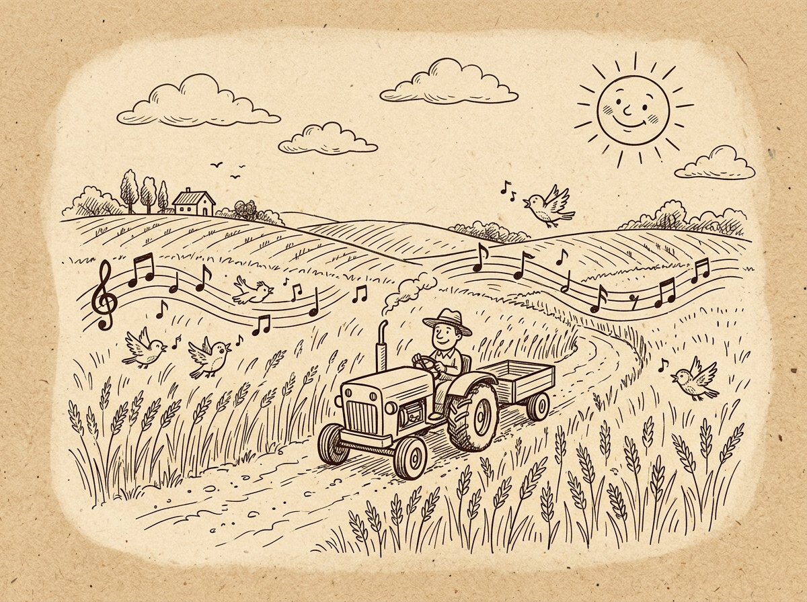
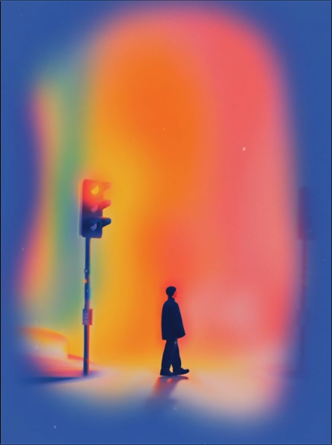
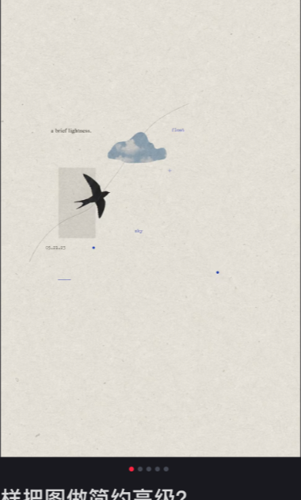
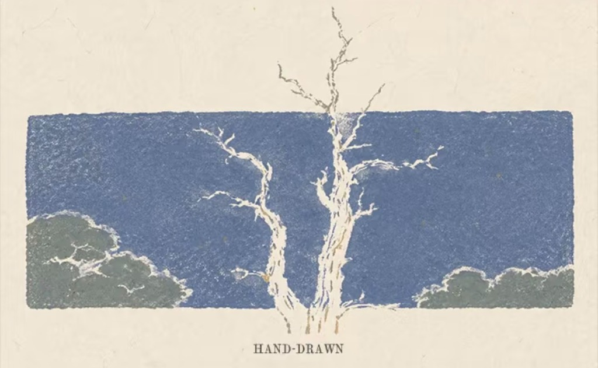

收 割 机 的 故 事
「那人撒种，这人收割，这话可见是真的。」
—— 约翰福音 4:37 · John 4:37
One sows and another reaps. This saying is true.
以“收割机”命名，象征着神国的丰收。
音乐作品如同撒下的种子，触动人心，在神的时间里结出果实。
The name 'Harvester' symbolizes the abundant harvest in God's kingdom. Music is like a seed that touches hearts and bears fruit in God's timing.

愿 景
VisionTo promote and develop modern contemporary Christian music
United as one, harvesting souls for God's kingdom through the power of music
使 命
MissionTo raise up the songwriters and musicians of this generation for the Lord through Chinese poetry and song creation
To guide people to know God through song creation and spread truth, faith, hope, and love
使 命 详 细 内 容
Our Core Mission Pillars
推动诗歌创作
Promoting Songwriting
鼓励并支持创作能够传递信仰的诗歌与歌曲。
Encourage and support the creation of songs and hymns that communicate faith.
提供服事平台
Providing a Service Platform
创建一个平台，让音乐人能够分享、服事，达到共赢。
Create a platform where musicians can share and serve, achieving a win-win situation.
建立版权制度
Establishing a Copyright System
保护创作人的版权，确保每首歌曲在法律框架下得到保障。
Protect creators' copyrights and ensure that each song is legally protected.
传承培育下一代
Passing on and Cultivating the Next Generation
培养下一代音乐人才，为神的事业贡献创意与才华。
Cultivate the next generation of music talent, contributing creativity and skills to God's work.
创 作 群 体 与 目 标 受 众
Creative Group and Target Audience
主要的号召群体
Primary Calling Group号召一群已经在上帝给的恩赐中装备成熟的门徒。
Call upon disciples who are spiritually mature and equipped with God's gifts.
通过他们的创作，帮助更多的人认识神、领受真理，并传递信望与爱的作品。
Through their creations, help others know God, receive the truth, and spread works of faith, hope, and love.

目标受众
Target Audience主要是那些未认识神的年轻人，甚至是年长的未信者。
Mainly young people who have not yet known God, as well as older non-believers.
让他们在这些歌曲中找到人生的盼望、希望与爱，这一切都在耶稣基督里。
Help them find hope, purpose, and love in these songs, all of which are found in Jesus Christ.

主 要 的 诗 歌 创 作 方 向
Main Songwriting Categories
布道型
适用于布道会或福音外展活动，结合流行音乐元素，使福音信息更具吸引力。
目的在于带动气氛，并整体传达基督信仰的核心价值观。
教会型
适用于教会敬拜、团契、主日崇拜等，歌词内容以赞美、敬拜、祷告为主，符合教会使用需求。
旨在帮助信徒更深入地进入敬拜神的氛围。
商业型
适用于日常生活，可在社交媒体、流行音乐平台上播放。
歌词生活化、口语化，使非信徒也能接受和感动。
通过触动人心的旋律和歌词，引导听众认识上帝的爱。
主题曲
为特殊的基督教机构创作主题曲：
• 孤儿院 (Orphanage)
• 老人院 (Nursing Home)
• 特殊儿童教育机构 (Special Needs Children)
收 割 机 主 要 服 事 同 工
The Servants & Co-workers behind Harvester Music Production



牧 师 团
Pastoral Advisory Team
顾问团队 / Advisory Team
需要 4 位牧师成为顾问，提供属灵遮盖，并监督歌词的神学准确性。
Four pastors will serve as advisors, providing spiritual covering and ensuring theological accuracy in lyrics.
监督职责 / Supervisory Role
- 检查歌词是否符合神学教导。
- 在非传统教会诗歌中提供指导，避免误导性用词。
- 作为创作坊的属灵掌舵人，确保财务透明，防止滥用资源。
Review lyrics for theological accuracy, provide guidance on non-traditional songs, and ensure financial transparency to prevent misuse of resources.
Promoting Contemporary Christian Music
推 广 现 代 流 行 基 督 教 音 乐
为神创作的门徒培养平台
专注于培养具备创作才能的门徒，让原创音符成为敬拜与传道的器皿。
Positioned as a platform for music created for God, focusing on cultivating disciples with creative talents.
触及年轻一代与福音禾场
通过现代音乐语言向世人传递信仰、希望与爱，尤其是年轻群体和未认识神的群体。
Use music to convey faith, hope, and love, especially to young people and those who have not yet known God.
光 影 与 旋 律 的 见 证
Witness of Light and Melody
让每一首写给神的歌都被听见，让每一颗跳动的心灵被主爱收割。
与 我 们 一 起 同 行 撒 种
无论你是词曲作者、编曲人、歌手，或愿意在祈祷与奉献中支持我们的同行者，收割机的禾场始终向你敞开。
Connect with Us · 关注我们的最新动态